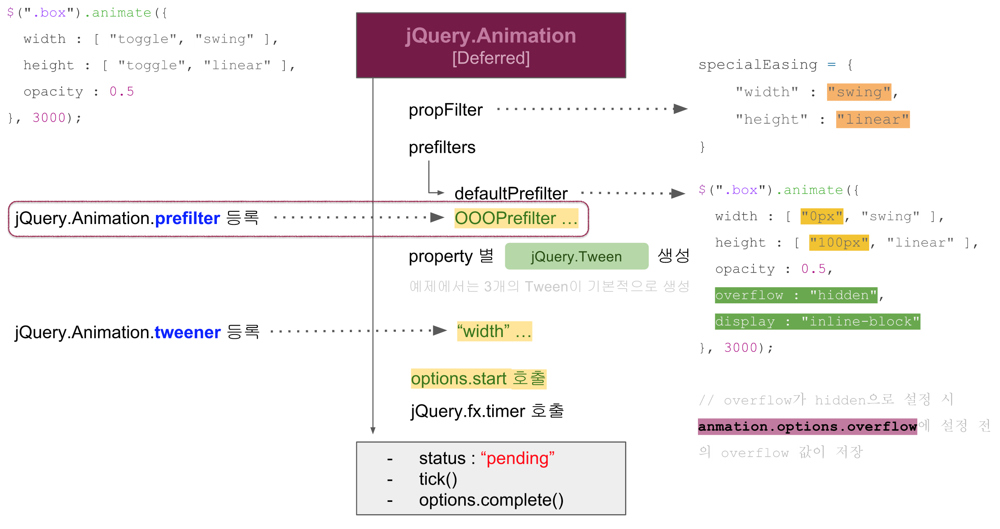
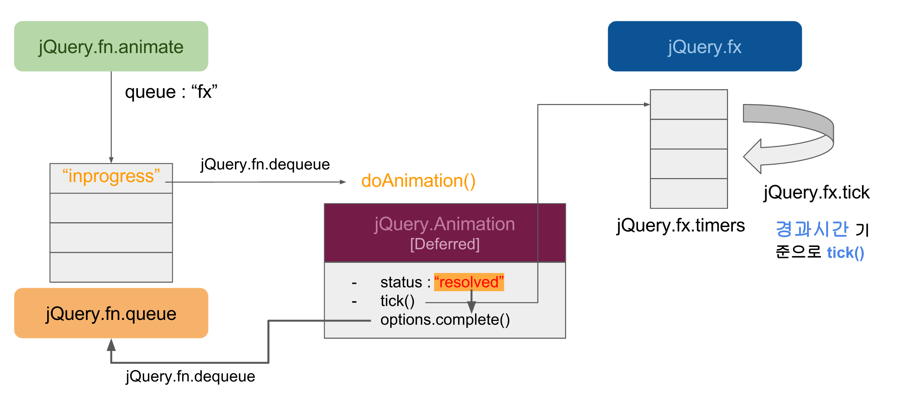

Created by 손찬욱 / chanuk.son
애니메이션을 순차적으로 실행할 수 있어야 한다
여러 대상을 동시에 애니메이션 할수 있어야 한다.
$(".box").animate({ left : "150px" },1000)
.animate({ top : "150px" },1000)
.animate({ left : "50px" },1000)
.animate({ top : "0px" },1000);See the Pen sequence animate by son chan uk (@sculove) on CodePen.
$(".box1").animate({ left : "200px" },1000, function() {
$(".box2").animate({ left : "50px" },1000, function() {
$(".box1").animate({ top : "150px" },1000, function() {
$(".box2").animate({ top : "0px" },1000, function() {
alert("완료!");
});
});
});
});See the Pen sequence animate - multi by son chan uk (@sculove) on CodePen.
$(".box1").animate({ left : "200px" },1000).promise().then(function() {
return $(".box2").animate({ left : "50px" },1000).promise();
}).then(function() {
return $(".box1").animate({ top : "150px" },1000).promise();
}).then(function() {
return $(".box2").animate({ top : "0px" },1000).promise();
}).then(function() {
alert("완료!");
});var $box1 = $(".box1");
var $box2 = $(".box2");
$box1.animate({ left : "200px" },1000);
$box2.animate({ top : "0px" }, 1000);
$.when($box1, $box2).then(function() {
alert("완료");
});See the Pen Parallel animate by son chan uk (@sculove) on CodePen.
jQuery.fx.animate은 어떻게 구현되어 있길래...???
Queue 구조, Deferred 객체
하나의 타이머, 경과시간 기준으로 좌표 계산
width or height를 변경할 경우
See the Pen jQuery.fn.animate overflow issue by son chan uk (@sculove) on CodePen.
See the Pen jQuery.fn.animate inline issue by son chan uk (@sculove) on CodePen.
jQuery.fn.animate은 hook 외에도 많은 확장을 지원한다.
display와 overflow 속성은 애니메이션 도중 jQuery가 바꾼다는데......?
어디를 확장하면 좋을까요?
jQuery.Animation.prefilter
// defaultPrefilter 이후에 호출
jQuery.Animation.prefilter( function( element, props, opts ) {
if(opts.overflow) {
$(element).css("overflow", "visible");
}
});See the Pen jQuery.fn.animate overflow issue - solved by son chan uk (@sculove) on CodePen.
jQuery.fx.animate Flow
jQuery Animation 은 다양한 시점에서 확장이 가능하다